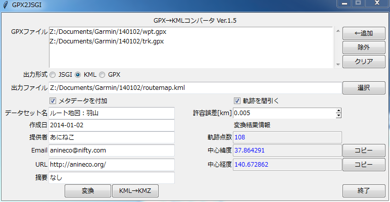
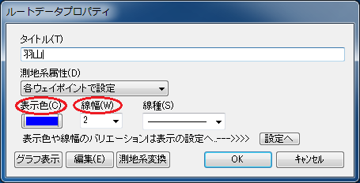

GPX2JSGI（GPX→KMLコンバータ）は、カシミール3Dで作成してGPX形式で保存したGPSデータ（ウェイポイント、ルート、トラック）を、地理院地図やGoogleマップ、Yahoo!地図にオーバーレイ（上乗せ表示）できるKML形式に変換するデスクトップアプリケーションです。当初は、電子国土Webシステムで上乗せデータとして用いられるJSGI形式への変換を行うソフトウェアとして開発したものですが、その後、KML形式への変換も行えるように機能を拡張したものです。
電子国土Webシステムが旧版となった現在では、JSGI形式への変換は不要な機能となってしまいましたが、GPX2JSGIの名称は当面そのままとする予定です。ここでは、KML形式への変換機能についてのみ説明します。
Windows Vista/7/8で動作します。動作確認はWindows 7とカシミール3D 最新版で行っています。
GPX2JSGIは、XSLTプロセッサとしてxsltproc、Tcl/Tkインタプリタとしてtclkitを用いています。トラックポイントの間引きにはGPSBabel、KMZ形式へのZIP圧縮にはInfo-ZIPを利用しています。付属ユーティリティのICONVIEWでは、ImageMagickのconvertコマンドを利用しています。これらの外部プログラムは、すぐに利用できる形で統合されて配布パッケージに含まれており、別途入手してインストールする必要はありません。
GPX2JSGIのソフトウェアおよび付属文書の著作権は、作者のあにねこ（anineco@nifty.com）が保持します。本ソフトウェアは無償で提供され、複製を入手した人は商用・非商用を問わず自由に使用、複写、変更、結合、掲載、配布することができます。本ソフトウェアの複製または変更した物を掲載、配布する場合は、ソースコード中の著作権表示は削除できません。
GPX2JSGIの配布パッケージに同梱されている外部プログラムの著作権については、表1のリンク先を参照して下さい。
| 配布元 | 利用している配布ファイル | ライセンス |
|---|---|---|
| tclkit | tclkitsh-8.5.9-win32.upx.exe tclkit-8.5.9-win32.upx.exe sdx-20110317.kit |
free |
| libxml | libxslt-1.1.26.win32.zip libxml2-2.7.8.win32.zip |
MIT License |
| iconv | iconv-1.9.2.win32.zip | LGPL |
| zlib | zlib-1.2.5.win32.zip | free |
| GPSBabel | GPSBabel-1.4.4-Setup.exe | GPL |
| Info-ZIP | zip300xn.zip | BSD-like |
| ImageMagick | ImageMagick-6.8.8-0-Q16-x86-windows.zip | free |
本ソフトウェアは無保証です。特に、変換結果のデータ形式の正当性・正確性については保証しません。作者は本ソフトウェアに起因するいかなる義務（サポートを含む）についても責任を負いません。
GPX2JSGIのインストールは、ダウンロードのページから最新版の配布パッケージ gpx2jsgi-X.X.zip（X.Xはバージョン番号）をダウンロードして、適当なフォルダの下に展開するだけです。配布パッケージを展開すると、gpx2jsgiというフォルダ（以下、GPX2JSGIのアプリフォルダと呼びます）の元に、下記のファイルが配置されます。
center.xsl … 中心座標計算用スタイルシート。 filter1.xsl … 軌跡データ間引き用スタイルシート。 filter2.xsl … 〃 fixver.xsl … GPX形式修正用スタイルシート。 geturl.xsl … KMZ形式作成用スタイルシート。 gpx2jsgi.exe … GPX→JSGI/KMLコンバータ実行形式ファイル。 gpx2jsgi.html … マニュアル。この文書です。 gpx2jsgi.tcl … gpx2jsgi.exeのソースファイル（Tcl/Tkスクリプト）。 gpx2jsgi.xsl … GPX→JSGI変換スタイルシート。 gpx2kml.xsl … GPX→KML変換スタイルシート。 iconlut.dtd … iconlut.xml用DTD。 iconlut.xml … アイコン変換表（GPX→JSGI）。 iconlut_common.xml … アイコン変換表（電子国土共通シンボル）。 iconlut2html.xsl … iconlut.xml閲覧用スタイルシート。 iconview.exe … シンボル画像作成・一覧実行形式ファイル。 iconview.tcl … iconview.exeのソースファイル（Tcl/Tkスクリプト）。 identity.xsl … 汎用恒等変換スタイルシート（XML Hacks p.129 から転載）。 jsgi2gpx.xsl jsgi2kml.exe … JSGI→KMLコンバータ実行形式ファイル。 jsgi2kml.tcl … jsgi2kml.exeのソースファイル（Tcl/Tkスクリプト）。 jsgi2kml.xsl … JSGI→KML変換スタイルシート。 mkexe.bat … Tck/Tkスクリプトをラッピングして実行形式ファイルを作成するバッチファイル。 puturl.xsl … KMZ形式作成用スタイルシート。 bin/* … 外部プログラム。 css/* … マニュアル用CSS。 example/* … サンプルのGPXデータと、それを変換して得られたファイル。 images/* … マニュアル用画像ファイル。 js/* … マニュアル用JavaScript。
GPX2JSGIのバージョンアップは、旧バージョンのアプリフォルダをまるごと削除して、新バージョンのアプリフォルダで置き換えます。
Ver.1.2以前のGPX2JSGIでシンボル画像をカスタマイズしていた場合は、アプリフォルダを削除する前に中のiconlut.xmlのバックアップを作成し、GPX2JSGIのデータフォルダにコピーします。データフォルダの場所については、データフォルダの項を参照して下さい。
GPX2JSGIのアンインストールは、GPX2JSGIのアプリフォルダをまるごと削除して下さい。また、GPX2JSGIのデータフォルダも、不要であれば削除して差し支えありません。
GPX2JSGIのアプリフォルダ内のgpx2jsgi.exe（青い羽根のアイコン）をクリックすると、GUIが起動して図1のような窓が開きます。ActiveTclがインストール済ならば、gpx2jsgi.tclをクリックしても全く同じ窓が開きます。両者は、Tcl/Tkのインタプリタが内蔵か、外部かが異なるだけで、機能・動作は全く同じです。
図1 GUI画面
変換したいGPXファイル（1個以上）を、右側の『←追加』ボタンを押してファイル選択ダイアログを開き、「GPXファイル」のリストに追加します。ファイル選択ダイアログでは、ControlキーやShiftキーを押しながらクリックすることにより、複数ファイルを同時に選択することができます。リスト中のファイルをマウスで選択して『除外』ボタンを押すと、リストから取り除くことが出来ます。また、『クリア』ボタンを押すと、リストは空になります。
次に、「出力形式」をJSGI、KML、GPXの中から選択し（起動時はKMLが選択されています）、「出力ファイル」を右側の『選択』ボタンを押して指定します。出力ファイルの拡張子は、出力形式に対応してそれぞれ .xml、.kml、.gpx として下さい。拡張子を指定しなかった場合は、自動的に付加されます。
通常は「メタデータを付加」欄のチェックは外したままで差し支えありません。
「メタデータを付加」欄にチェックを入れると、その下の各欄が図2のように編集可能になり、設定した文字列がメタデータとして出力ファイルに書き込まれます。GPX2JSGIを初めて立ち上げたときは「提供者」以下は空欄になっているので、適宜記入して下さい。
各項目の意味は、次の通りです。図2に記入例があります。
出力形式がKMLの場合は、データセット名、作成日、提供者、URLが出力ファイルに書き込まれます。
記入したメタデータのうち、提供者、Email、URL、摘要は自動的に保存され、次にGPX2JSGIを起動したときに自動的に読み込まれます。
トラックポイントを間引く場合は、「軌跡を間引く」欄にチェックを入れて下さい。すると、その下の「許容誤差」のスピンボックスが編集可能になるので、正の数値（単位はkm）を設定します。間引きには、cross track errorアルゴリズムを用いたGPSBabelのSimplifyフィルタを利用しています。許容誤差を大きくすると間引かれる点数が増えますが、軌跡の細部の形状が失われるので、調節が必要です。最初は初期設定値（0.005km）で試してみて下さい。
図2 変換準備完了後のGUI画面
全ての必要項目を記入したのちに『変換』ボタンを押すと、変換結果が「出力ファイル」に指定したファイルに出力されます。変換が成功すると、図3に示すように、変換後のトラックポイント数と中心座標の計算結果（緯度、経度。単位は度）を表示します。中心座標は『コピー』ボタンを押すとクリップボードにコピーされ、他のアプリケーションにペーストすることができます。

図3 変換実行後のGUI画面
KMLファイルに変換後に『KML→KMZ』ボタンを押すと、引き続いてKMZ形式に変換し、拡張子を.kmzに変えたファイル名で出力します。
『終了』ボタンを押すと、プログラムを終了します。
カシミール3Dの「ウェイポイント/ルートポイントのプロパティ」（図4）の設定項目が、地理院地図でどのように表示されるかを説明します。

図4 ウェイポイント/ルートポイントのプロパティ
カシミール3Dの「ルートデータプロパティ」（図5）の設定項目が、地理院地図でどのように表示されるかを説明します。

図5 ルートデータプロパティ
カシミール3Dでは、ルート上の各ポイントに対しても図4の「ウェイポイントのプロパティ」を開いて、全く同様のプロパティを設定することができます。GPX2JSGI Ver.1.2より、ルートポイントもウェイポイントと同様にJSGI形式に変換するように、仕様が変更されました。ただし、アイコンが「地名」グループの「なし」（コード番号903001）のルートポイントは例外で、変換されません（「なし」アイコンのウェイポイントは変換されます）。ルートポイントを変換したくない場合は、アイコンを「なし」に設定して下さい。複数のルートポイントを選択してから「ウェイポイントのプロパティ」を開くと、アイコンの一括変更が可能です。
カシミール3Dの「トラックデータプロパティ」（図6）の設定項目が、地理院地図でどのように表示されるかを説明します。

図6 トラックデータプロパティ
Ver.1.2およびそれ以降のGPX2JSGIでは、実行時に参照するアイコン変換表やその他のデータを %APPDATA%\map.jpn.org\gpx2jsgi をパスとするフォルダに置きます。このフォルダを、GPX2JSGIのデータフォルダと呼びます。ここで、%APPDATA%はWindowsのApplication Dataフォルダを指す環境変数で、OSによって次のように定められています。
| OS | Application Dataフォルダ |
|---|---|
| Windows XP | \Documents and Settings\<ユーザ名>\Application Data |
| Windows Vista/7 | \Users\<ユーザ名>\AppData\Roaming |
（参考：リソースの管理 - Windows 7 対応アプリケーションの互換性）
Application Dataフォルダは隠しフォルダになっているので、通常はエクスプローラに表示されませんが、アドレスバーに%APPDATA%と入力すると開くことができます。
アイコン変換表は、カシミール3Dのアイコンのコード番号と、シンボル画像のURLの対応を定義します。GPX2JSGIが変換を実行する際には、データフォルダのiconlut.xmlがアイコン変換表として参照されます。GPX2JSGIを起動した際にこのファイルがない場合は、アプリフォルダから自動的にコピーされます。アイコン変換表を編集することにより、シンボル画像を自由にカスタマイズすることができます。
下記は、アイコン変換表のファイル形式を説明するために、iconlut.xmlの冒頭の数行を抜粋したものです。丸数字は説明のために付したもので、実際のファイルには書かれていません。
<?xml version="1.0" encoding="UTF-8"?>
<?xml-stylesheet type="text/xsl" href="iconlut2html.xsl"?>
<!DOCTYPE iconlut SYSTEM "iconlut.dtd" [
<!ENTITY baseurl "https://map.jpn.org/icon/"> ①
]>
<iconlut>
<icon code="901001" src="&baseurl;901001.png" size="24">ピン</icon> ②
：
行①は、baseurlという名前（実体名）の内容が、文字列https://map.jpn.org/icon/を示すことを宣言しています。行②は、コード番号901001に対応するシンボル画像のURLとサイズ（24x24画素）を定義しています。シンボル画像の位置の基準は画像の中央で固定です。&baseurl;を実体参照と言い、行①の宣言により実体名の内容に置き換えられるので、このコード番号に対応するシンボル画像のURLはhttps://map.jpn.org/icon/901001.pngとなります。
地理院地図版ルート地図の場合、シンボル画像の右上に地点名（ラベル）が表示されます。シンボル画像の表示倍率や、ラベルの文字色・文字サイズなどは、KMLファイル内のスタイル指定（<Style>〜</Style>）により、カスタマイズが可能です。
<Style id="N952015">
<IconStyle>
<scale>1</scale> ①
<Icon>
<href>https://map.jpn.org/icon/952015.png#N952015.24.24</href>
</Icon>
<hotSpot x="0.5" y="0.5" xunits="fraction" yunits="fraction"/> ②
</IconStyle>
<LabelStyle>
<color>ffff0000</color> ③
<scale>1.1</scale> ④
</LabelStyle>
</Style>
詳しくはKML ReferenceのIconStyleとLabelStyleの項を参照下さい。上記の個所を恒常的に変更する場合は、アプリフォルダ内のgpx2kml.xslの次の個所を変更したのち、KMLファイルへ再変換するという方法もあります。次の例では、文字色を白、文字サイズを12pxに変更しています。
<Style id="{$id}">
<IconStyle>
<scale>1</scale> ①
<Icon>
<href>
<xsl:value-of select="$icon/@src"/>
<xsl:if test="starts-with($icon/@src,'http:')">
<xsl:value-of select="concat('#',$id,'.',$icon/@size,'.',$icon/@size)"/>
</xsl:if>
</href>
</Icon>
<hotSpot x="0.5" y="0.5" xunits="fraction" yunits="fraction"/> ②
</IconStyle>
<LabelStyle>
<color>ffffffff</color> ③
<scale>0.75</scale> ④
</LabelStyle>
</Style>
ICONVIEWは、カシミール3Dでウェイポイントに設定可能なアイコンをシンボル画像（透過処理済PNG形式）に一括変換し、それ用のアイコン変換表を作成するユーティリティです。動作には、カシミール3Dがインストールされていることが必要です。
アプリフォルダの中のiconview.exe（青い羽根のアイコン）をクリックしてGUIを起動し、『画像作成』ボタンを押します。作成完了のメッセージを確認してから、引き続いて『一覧表示』ボタンを押します。ブラウザが起動し、作成したシンボル画像の一覧を表示します。『終了』ボタンでICONVIEWを終了します。
ICONVIEWを実行すると、シンボル画像セットがデータフォルダ内のiconsというフォルダに、アイコン変換表がデータフォルダのiconlut_local.xmlというファイルにそれぞれ出力されます。
！注意！カシミール3Dに付随するデータの著作権は、作者のDAN杉本氏に属するものとされています（カシミール3Dマニュアルの24.著作権の章を参照）。ICONVIEWで作成したシンボル画像（カシミール3Dに付随するデータと看做される）は、地図系Web APIやGoogle Earth等を用いて表示されるルート地図の上への表示、および、それらに関連する凡例や説明のための表示に限って、かつ非商用で使用し、その他の用途や商用での使用、特に画像ファイルを単体で配布することはご遠慮下さい。
JSGI2KMLは、JSGI形式のファイルをKML形式に一括変換するユーティリティです。
アプリフォルダの中のjsgi2kml.exe（青い羽根のアイコン）をクリックすると、GUIが起動して窓が開きます。まず、『←フォルダ』ボタンと『←ファイル』ボタンで変換元のJSGIファイル（拡張子xml）を選択します。『←フォルダ』でフォルダを選択すると、その下のフォルダ階層を再帰的に探索してJSGIファイルをリストアップします。『←ファイル』ボタンは、GPX2JSGIの『←追加」と同じ機能で、ファイル単位で選択します。リストにはいったファイルは『除外』と『クリア』でリストから取り除くことができます。
『変換』ボタンは、リストの全ファイルに対してJSGI形式からKML形式への変換を開始します。変換結果の出力先は変換元と同じフォルダ内で、変換元のファイル名の拡張子をxmlからkmlに変えたものとなります。変換先に既に同名のファイルがある場合には、リスト上でファイル名の背景が赤になっていますので、『変換』ボタンを押す前に良く確認し、変換で上書きしたく場合はリストから除外して下さい。多数のファイルがリストにある場合には、リストをスクロールして確認することができます。
変換終了後、変換結果のログファイルを見るか、確認を求めるダイアログが開きます。ログファイルを確認する場合はNotepadが開きますので、必要に応じてログファイルを別名で保存する等の処理を行った後、Notepadを閉じて下さい。なお、ネットワークドライブに対してファイルの再帰的探索ができないことと、ログファイルに記録された変換開始と終了時刻が1時間ずれているという不具合が確認されています。
カシミール3Dという素晴らしいソフトウェアを開発して、無償で提供頂いている作者のDAN杉本氏に感謝致します。また、tclkit、libxml、iconv、zlib、GPSBabel、Info-ZIP、ImageMagickという強力なオープンソフトウェアの開発者にも感謝です。本ソフトウェアが、カシミール3Dと電子国土Webシステムのさらなる活用のお役に立てば幸いです。
各データ形式についての情報と、XSLT、Tck/Tkのプログラミングで大変役に立った書籍を挙げます。
| 2015-03-07 | JSGI2KMLの説明を追加。 |
| 2014-11-03 | GPX2JSGI Ver.1.5を公開（Ver.1.4は未公開）。 (1) 出力形式の初期値をKML形式に変更。 (2) データフォルダの iconlut.xml が参照されないことがあるバグを修正。 |
| 2013-12-28 | GPX2JSGI Ver.1.3 （地理院地図対応版）を公開。 (1) GPX形式から、地理院地図が読み込めるKML形式（KMLウェブ地図プロファイル）に変換。 (2) JSGI2KML（JSGI→KMLコンバータ）Ver.1.3をGPX2JSGI Ver.1.3に同梱。 |
| 2011-03-28 | GPX2JSGIの公式サイトをhttps://anineco.nyanta.jp/gpx2jsgi.htmlに移転して、全面的にリニューアル。 GPX2JSGI（GPX→JSGIコンバータ）Ver.1.2 を公開。 (1) インストールの簡易化 ・必要な外部プログラム全てを配布パッケージに同梱。 ・Tclスクリプトをtclkitを用いて実行形式にラッピング。ActiveTclのインストールも不要。 (2) アイコン変換機能の拡充 ・カシミール3Dのアイコンに対応するシンボル画像をhttps://map.jpn.org/に設置。 ・ルートポイントに設定したアイコンをシンボル画像に変換する機能を追加。 (3) KML形式への変換にフル対応 ・JSGI形式と同様に、アイコンをシンボル画像に変換。 ・KMZ形式への圧縮の際、必要なシンボル画像も含んだ自立型パッケージの作成が可能。 (4) GUIの改良 ・GPXファイル選択ダイアログで、複数のファイルを同時に選択可。 ・軌跡間引きの許容誤差の設定にスピンボックスを設置。 (5) その他 ・設定ファイルや実行時の一時ファイルは、Application Data フォルダの配下に配置するように変更 ・iconviewが生成するシンボル画像が、電子国土プラグイン版で透過しなかった問題を修正。 |
| 2010-10-23 | GPX2JSGI Ver.1.1β 公開。 ・カシミール3D Ver.8.8.5に対応。 |
| 2010-10-12 | カシミール3D Ver.8.8.5 に関する注記を追加。 |
| 2010-08-04 | GPX2JSGI Ver.1.0β 公開。 ・GPSBabel-1.4.1に対応。 ・外部プログラム（xsltproc,Info-ZIP）を同梱。 ・トラックデータ間引きの許容誤差の初期値を2mから5mに変更。 ・GI要素にXML Schema instance関連の属性を追加。 |
| 2009-04-26 | GPX2JSGI Ver.1.0α 公開。 ・GPSBabelを利用したトラックデータの間引き機能を追加。 ・変換後のトラックデータの点数を表示する機能を追加。 |
| 2009-01-25 | GPX2JSGI Ver.0.9α 公開。 ・おまけ機能として、KML形式およびGPX形式に変換する機能を追加。 ・KML形式に変換後、引き続いてKMZ形式に圧縮できる（要、Info-ZIP）。 ・GPX形式に変換したものは、再びカシミール3Dで読み込める（マージ機能）。 ・機能追加に対応して、GUIを変更。 |
| 2009-01-06 | GPX2JSGI Ver.0.8α 公開。 ・JSGI形式に変換後、中心座標を計算して表示する機能を追加。 ・変換元のJSGIファイルの数の制限（最大3個）をなくした。これに対応して、ファイル選択のGUIを改善。 ・プログラム終了時にメタデータの設定項目（提供者、Email、URL、摘要）を gpx2jsgi_init.txt に保存。 ・カシミール3Dのシンボル画像を表示するツール（iconview）を同梱。 ・xsltprocとXML2HTMのバイナリファイルは、すべてbinフォルダの下に置くように変更。 |
| 2008-12-13 | GPX2JSGI Ver.0.7α 公開。 ・JSGI形式に変換後、引き続いてネイティブ化する機能を追加。 ・カシミール3Dの全てのアイコン画像に対応するように、iconlut.xmlを拡充。 |
| 2008-10-31 | GPX2JSGI Ver.0.6α 公開。 ・異なるシンボルなのに同じ画像で表示されるバグを修正。 ・ウェイポイントの「GPSでの備考」の変換仕様を変更。 ・ルートとトラックの線幅・線種の変換仕様を変更。 |
| 2008-10-09 | TODOに追記。 ・NDB2JSGIの開発。 ・公開を検討中の「カシミール3Dフル対応シンボル画像」のスクリーンショットを掲載。 |
| 2008-08-18 | GPX2JSGI Ver.0.5α 公開。 ・電子国土Webシステム用XMLデータ仕様書第1.0版（平成20年4月15日更新）に対応。 ・GI要素のexchangeMode属性を削除。 ・点型データのCRS要素をposition要素の前に移動。 ・線型データのCurve要素はcurve要素に変更（先頭小文字）。 |
| 2008-01-19 | GPX2JSGI Ver.0.4α 公開。 |